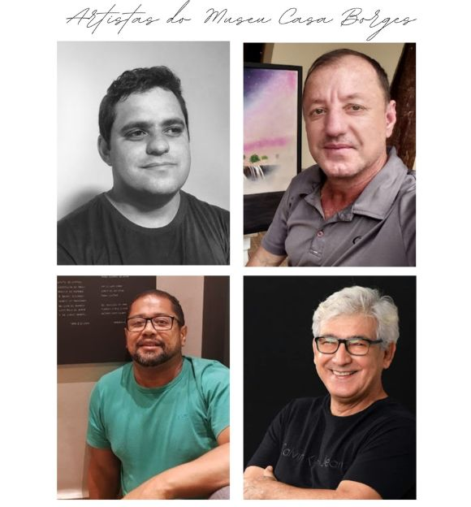

O Museu Casa Borges em cartaz

Os Artistas do Museu Casa Borges
POVO BALATIPONÉ-UMUTINA:
PRESENTE – PASSADO – FUTURO.
BARRA DO BUGRES: NATUREZA,
HISTÓRIA E CULTURA.
COMUNIDADES QUILOMBOLAS DE
BARRA DO BUGRES: MEMÓRIAS,
SABERES E FAZERES.
ESPECIAL MULHERES